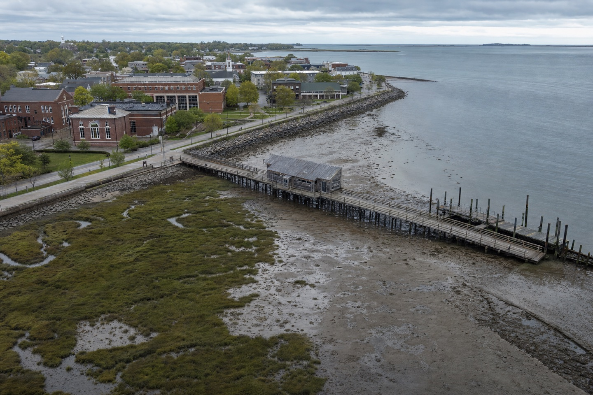

Harbor 07
Climate adaptation review · 14 Oct
Presenting · Brief

0.74mProjected surge
612Daily ferry riders
2Evidence branches ↓
Water arrives first here.
Pier hingeFirst operational failure at +0.51m.
Marsh shelfCan receive 38% of peak volume.
Town edgeProtect the route, not the whole shore.
One route must stay open.
4.2m clearContinuous promenade width.
1:20 riseStep-free route to the ferry deck.
24 / 7Emergency access retained.
Absorb. Lift. Connect.
01 · Living shelf
02 · Raised pier
03 · Dry link
Release the next design phase.
$3.8mPhase-one cap
11 moDesign + permits
92%Route uptime target